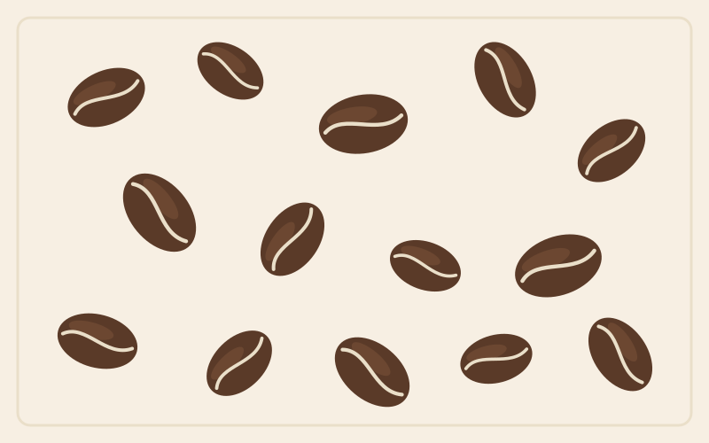
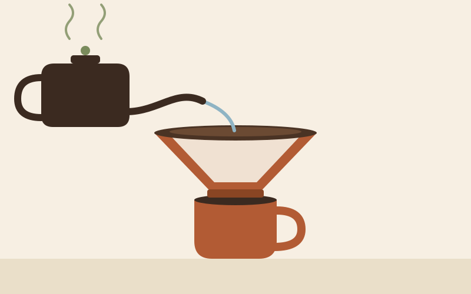

The Art of Pour-Over Coffee
Pour-over is the slowest, most hands-on way to brew a cup of coffee — and, for a lot of people, the tastiest. This site is a small personal project about why the method matters, how it works, and how you can try it yourself at home.

Why Coffee Culture Matters
Coffee is one of the most traded agricultural products in the world, and for millions of people it is also a daily ritual rather than just a drink. The pour-over method grew out of a simple idea: if you control the water, the grind and the time by hand, you can taste the coffee's origin more clearly than with an automatic machine.
This site looks at pour-over specifically, but the same appreciation applies to any careful brewing method.
What You'll Find Here
The site is split into a few short pages so you can explore at your own pace:
On this site
- A history and background page about pour-over brewing
- A comparison table of popular home brewing methods
- A contact form for questions or feedback
- Photos and a short embedded map of coffee's origin
A simple brewing ritual
- Boil water and let it rest a few seconds off the heat
- Grind your beans just before brewing
- Rinse the paper filter and warm the dripper
- Pour a small amount of water to "bloom" the grounds
- Pour the rest slowly in a spiral, then let it drain
